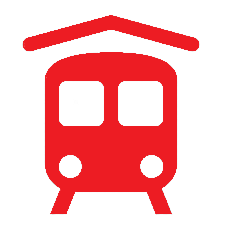
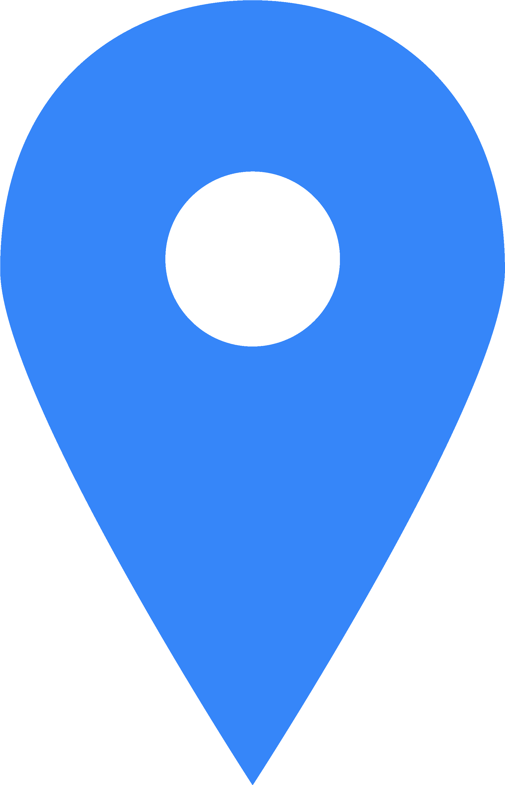

Layers
Komplain Keterlambatan
Diagram Jumlah Komplain Per Bulan
Untuk menampilkan komplain setiap bulan pada peta,
aktifkan layer dibawah.
Sumber : Twitter
Tahun 2019
Legenda
Tab Pencarian Stasiun
Kereta
 Stasiun
 Lokasi Komplain Keterlambatan
Diagram Ketinggian Jaringan Rel
Rel Kereta Api
Warna Ikon Kereta Api
KA Taksaka (83)
KA Taksaka (84)
KA Taksaka (85)
KA Taksaka (86)
KA Bogowonto (141)
KA Bogowonto (142)
KA Gajahwong (143)
KA Gajahwong (144)
KA Fajar Utama YK (145)
KA Fajar Utama YK (146)
KA Senja Utama YK (147)
KA Senja Utama YK (148)
KA Progo (307)
KA Progo (308)